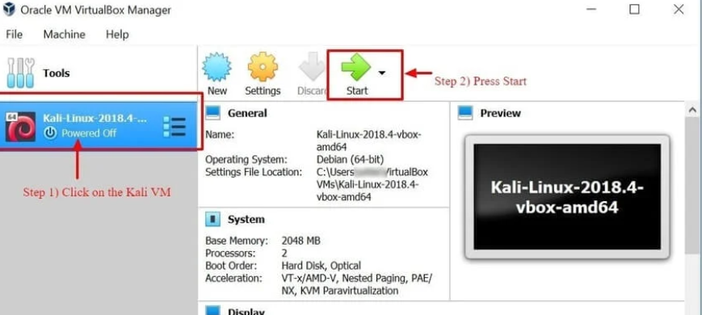

Kali Linux adalah distribusi sistem operasi Linux yang dirancang khusus untuk tugas keamanan siber seperti pengujian penetrasi, peretasan etis, forensik digital, dll. Ini adalah sistem operasi yang kuat dan serbaguna yang juga menyediakan berbagai alat dan sumber daya untuk profesional keamanan. sebagai individu yang tertarik pada keamanan siber dan peretasan etis.
Apa itu Kali Linux?
Kali Linux adalah distribusi Linux sumber terbuka yang dirancang untuk tujuan keamanan siber. Ini adalah distribusi Linux berbasis Debian yang menyediakan berbagai alat dan sumber daya untuk peretas etis, dan profesional keamanan. Kali Linux dilengkapi dengan beragam alat pengujian keamanan.
Selain itu, Kali Linux mengalami pengembangan dalam lingkungan yang sangat aman, di mana sejumlah individu tepercaya memiliki hak istimewa untuk berkontribusi, dan setiap paket diautentikasi melalui tanda tangan pengembang. Secara khusus, Kali memiliki fitur kernel khusus yang dimodifikasi untuk mendukung injeksi.
Metode Instalasi Kali Linux:
- Langsung di PC, Laptop – Memanfaatkan image Kali ISO, Kali Linux bisa langsung diinstall ke PC atau Laptop. Metode ini paling baik dilakukan jika Anda memiliki PC cadangan dan familiar dengan Kali Linux. Selain itu, jika Anda merencanakan atau melakukan pengujian titik akses apa pun, disarankan untuk menginstal Kali Linux langsung ke laptop berkemampuan Wi-Fi.
- Tervirtualisasi (VMware, Hyper-V, Oracle VirtualBox, Citrix) – Kali Linux mendukung sebagian besar hypervisor yang dikenal dan dapat dengan mudah digunakan yang paling populer. Gambar pra-konfigurasi tersedia untuk Unduh dari https://www.kali.org/, atau sebuah ISO dapat digunakan untuk menginstal sistem operasi ke dalam hypervisor pilihan secara manual.
- Cloud (Amazon AWS, Microsoft Azure) – Mengingat popularitas Kali Linux, AWS dan Azure menyediakan image untuk Kali Linux.
- Disk Boot USB – Memanfaatkan ISO Kali Linux, disk boot dapat dibuat untuk menjalankan Kali Linux di mesin tanpa benar-benar menginstalnya atau untuk tujuan Forensik.
- Windows 10 (Aplikasi) – Kali Linux sekarang dapat berjalan secara native di Windows 10, melalui Command Line. Belum semua fitur berfungsi karena masih dalam mode beta.
- Mac (Dual atau Single boot) – Kali Linux dapat diinstal di Mac, sebagai sistem operasi sekunder atau sebagai sistem operasi utama. Paralel atau Fungsionalitas boot Mac dapat digunakan untuk mengonfigurasi ini mempersiapkan.
Install Kali Linux menggunakan Virtualbox
Berikut langkah demi langkah proses cara install Kali Linux menggunakan Virtualbox dan cara menggunakan Kali Linux:
Cara termudah dan bisa dibilang paling banyak digunakan adalah menginstal Kali Linux dan menjalankannya dari VirtualBox milik Oracle.
Metode ini memungkinkan Anda untuk terus menggunakan perangkat keras yang ada sambil bereksperimen dengan Kali Linux yang diperkaya fitur di a lingkungan yang benar-benar terisolasi. Yang terbaik dari semuanya, semuanya gratis. Kali Linux dan Oracle VirtualBox gratis untuk digunakan. Kali ini Tutorial Linux mengasumsikan Anda telah menginstal Oracle VirtualBox di sistem Anda dan telah mengaktifkan Virtualisasi 64-bit melalui Bios.
-
Go to
https://www.kali.org/downloads/
Ini akan mengunduh gambar OVA, yang dapat diimpor ke VirtualBox
-
Buka Aplikasi Oracle VirtualBox, dan dari File, Menu pilih
Import Appliance
File Menu -> Import Appliance
- Pada layar berikut “Peralatan untuk Diimpor” Telusuri ke lokasi file OVA yang diunduh dan klik Buka
- Setelah Anda mengklik Buka, Anda akan dibawa kembali ke “Peralatan untuk Diimpor” cukup klik Berikutnya
- Layar berikut “Pengaturan Peralatan” menampilkan ringkasan pengaturan sistem, membiarkan pengaturan default baik-baik saja. Seperti yang ditunjukkan pada gambar di bawah, catat di mana Mesin Virtual berada setelah itu lalu klik Impor untuk pada langkah berikut.
- VirtualBox sekarang akan Mengimpor alat Kali Linux OVA. Proses ini dapat memakan waktu antara 5 hingga 10 menit untuk diselesaikan.
- Selamat Kali Linux telah berhasil diinstall di VirtualBox. Anda sekarang akan melihat VM Kali Linux di Konsol VirtualBox. Selanjutnya, kita akan melihat Kali Linux dan beberapa langkah awal yang harus dilakukan.
- Klik pada VM Kali Linux di dalam Dasbor VirtualBox dan klik Mulai, ini akan mem-boot Sistem Operasi Kali Linux. 
- Pada layar login, masukkan “Root” sebagai nama pengguna dan klik Berikutnya.
- Seperti disebutkan sebelumnya, masukkan “toor” sebagai kata sandi dan Sign In. You will now be present with the Kali Linux GUI Desktop. Congratulations you have successfully logged into Kali Linux.
Kesimpulan
Singkatnya, Kali Linux adalah sistem operasi luar biasa yang banyak digunakan oleh berbagai profesional mulai dari Administrator Keamanan, hingga Peretas Black Hat. Mengingat utilitasnya yang kuat, stabilitas, dan kemudahan penggunaannya, ini adalah sistem operasi yang harus diketahui oleh semua orang di industri TI dan penggemar komputer. Memanfaatkan hanya dua aplikasi yang dibahas dalam tutorial ini akan sangat membantu perusahaan dalam mengamankan infrastruktur Teknologi Informasi mereka. Nmap dan Metasploit tersedia di platform lain, namun kemudahan penggunaannya dan konfigurasi pra-instal di Kali Linux menjadikan Kali sistem operasi pilihan saat mengevaluasi dan menguji keamanan jaringan. Seperti yang dinyatakan sebelumnya, berhati-hatilah saat menggunakan Kali Linux, karena Kali Linux hanya boleh digunakan di lingkungan jaringan yang Anda kendalikan dan atau izin pengujiannya Anda miliki. Seperti beberapa utilitas, sebenarnya dapat menyebabkan kerusakan atau hilangnya data.